I utilze "opencv-python(cv2)" library for the image processing and "scipy" library for the sparse matrix and linear algebra.
For combining all objectives into a single least squre problem, I made the sparse matrix A that have (number of pixels) X (number of pixels) size
and matrix b that have (number of pixel) X (RGB).
They are initialzed by 0 value.
In the for loop for all pixels, the diagonal element that indicates the corresponding pixel is subtracted twice and x, y gradients are calculated to be assigned into the b.
When calculating the gradients, the pixel that does not have the right or down neighbor raises IndexError and the values at the neighbor index will not be added to A nor b.
Finally, the intensity of the top left is added to matrix b to preserve its color.
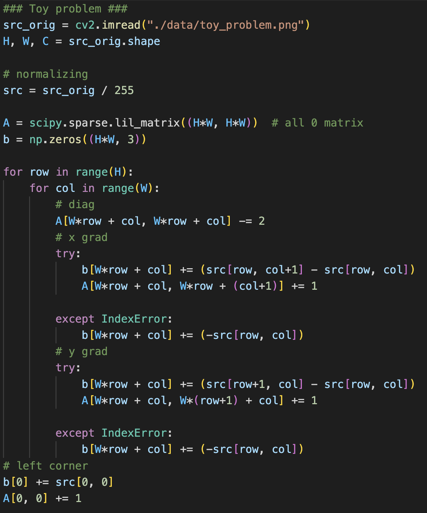
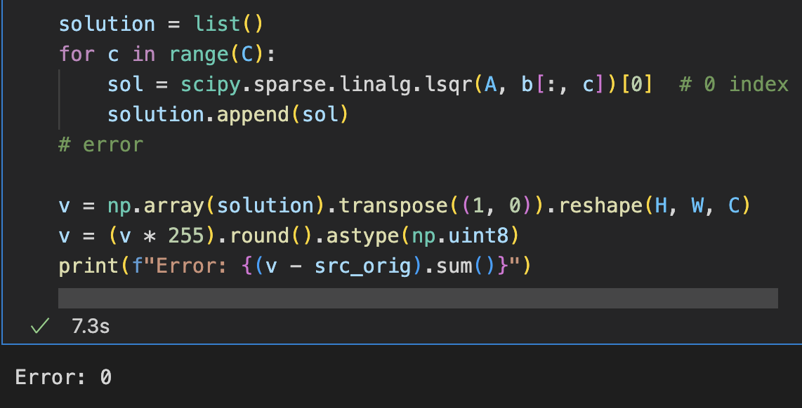
Fig 1. code for toy problem
The least square problem can be solved with function in scipy and the solution is reconstructed corretly without any error.
POISSON BLENDING (50 PTS)
For the first step to implement the blending, the mask of the source image and the location to be blended are needed.
Using the functions in cv2 library, the mask can be obtained and saved interactively.
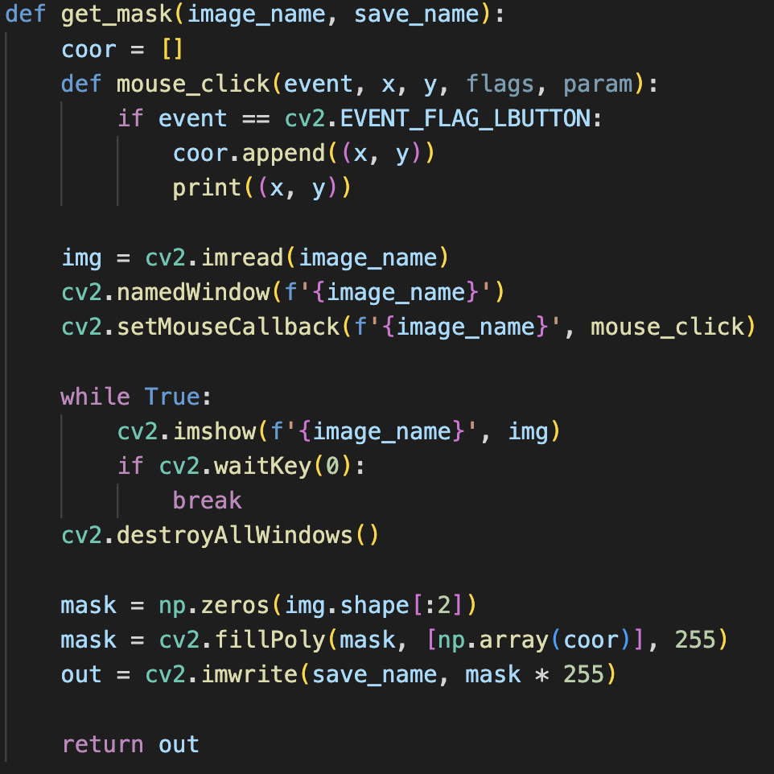
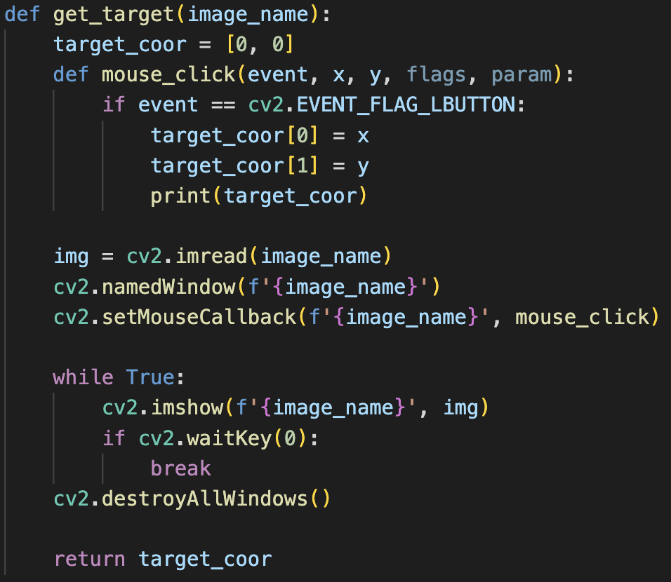
Fig 2. functions for a mask and a information of the region te be blended.
In a similar way, a user can enter the top left corner of the region where the user wants to blend into.
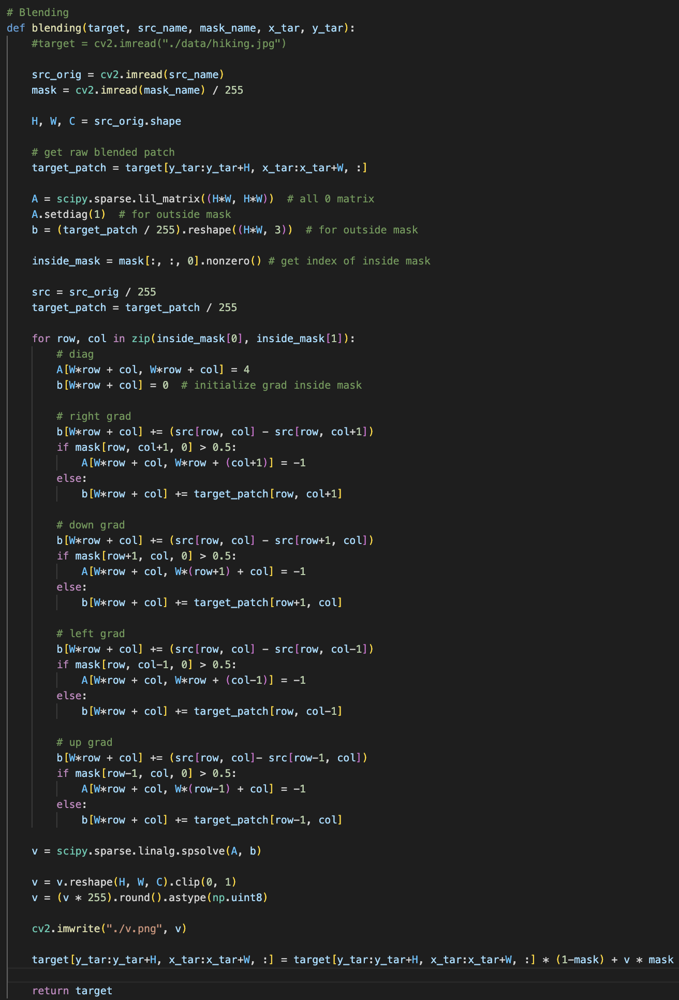
Fig 3. code for the blending
Now we can implement poisson blending exploiting target, source image, a mask of the source image and the target location to be blended.
Extending the toy problem, now four gradients(right, down, left, up) are calculated only inside the mask.
For the second summation of the objectives, I add the value of the target to b on the neighbors that are outside the mask.
Since lsqr function is quite slow on a high-resolution, I use spsolve function which can solve three RGB channel at the same time.
On the regions outside the mask, I design the objective to follow the target image.
Fig 4. result of the implemented poisson blending
BLENDING WITH MIXED GRADIENTS (10 PTS)
Blending with mixed gradients can be implemented easily by adding a simple function shown in the below.
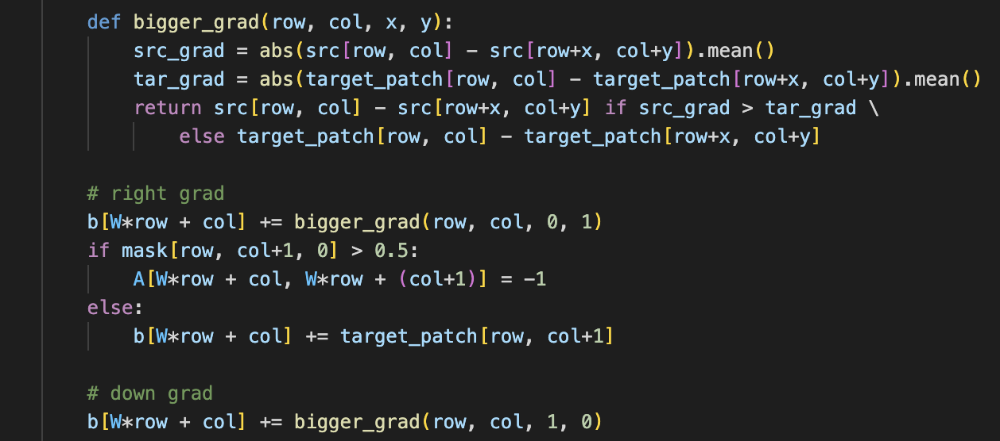
Fig 5. code for the mixed gradients
YOUR OWN EXAMPLES (20 PTS)
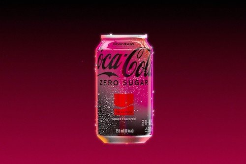
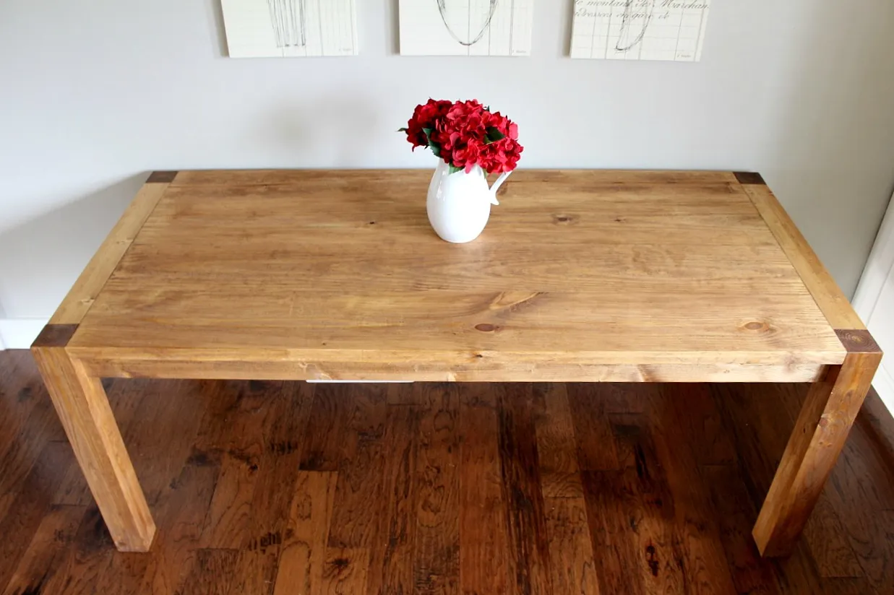
Fig 6. (Example 1) source and target image
First exmample is coca-cola on the table.
The color of the coke are changed a lot and there is no significant difference between the two methods.
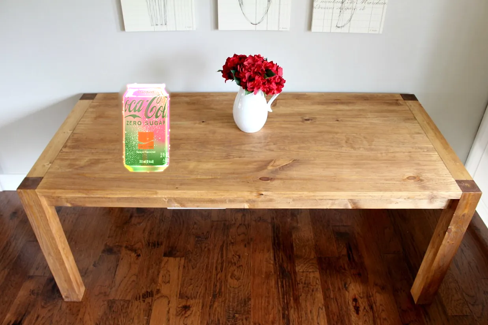
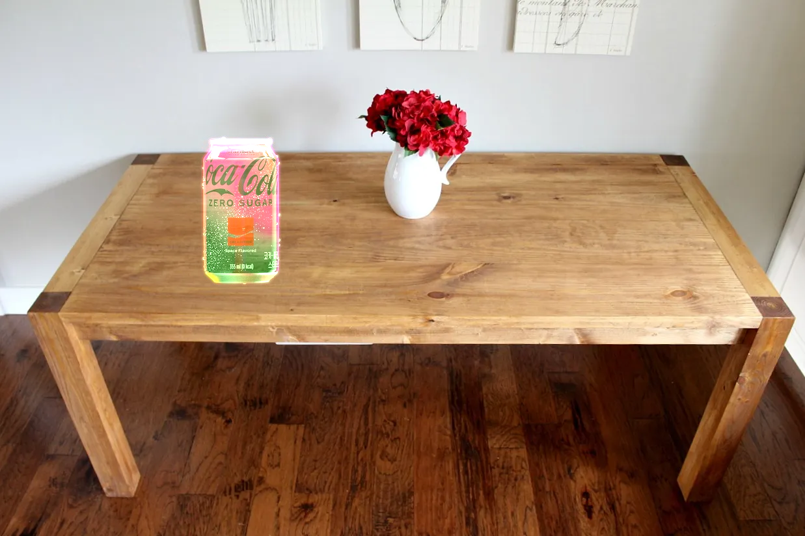
Fig 7. Coca-cola on the table (without mixed gradients / with mixed gradients)
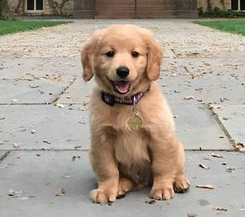
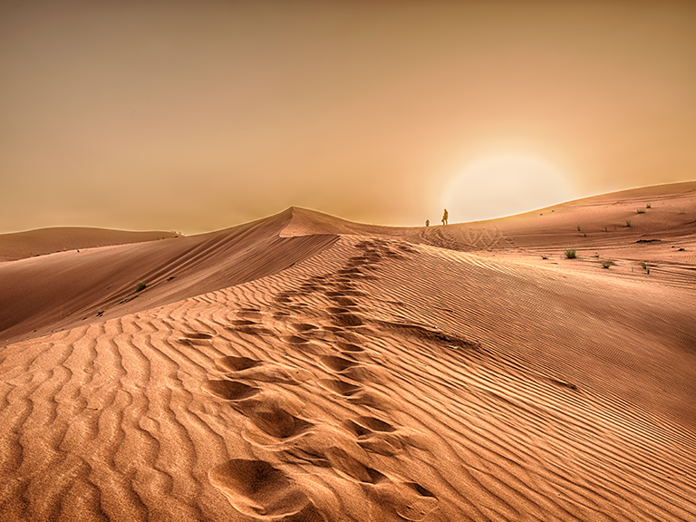
Fig 8. (Example 2) source and target image
Second exmample is a dog in the desert.
In the poisson blending without mixed gradients, the color of the dog is slightly changed and it fits well to the target background.
However, with mixed gradients, it seems that the dog becomes transparent because it is following the target's gradient.
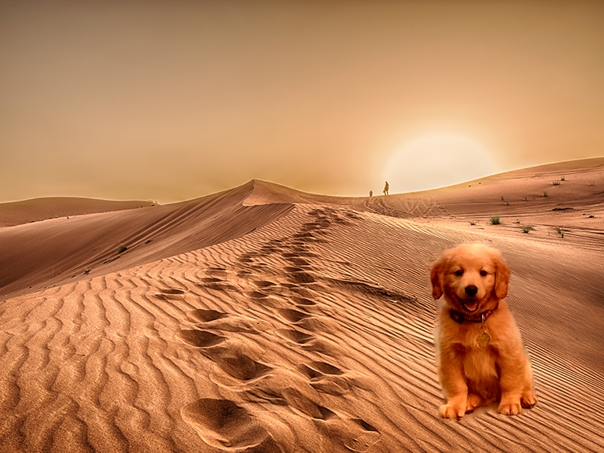
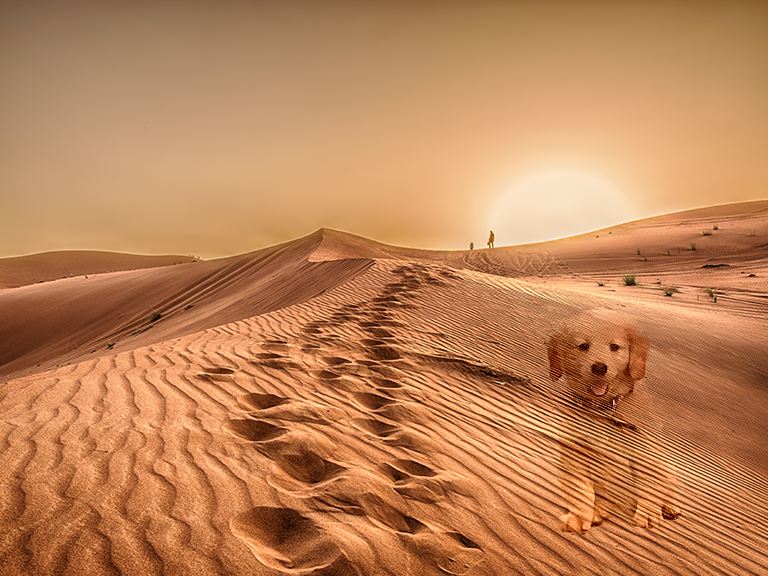
Fig 9. A dog in the desert (without mixed gradients / with mixed gradients)
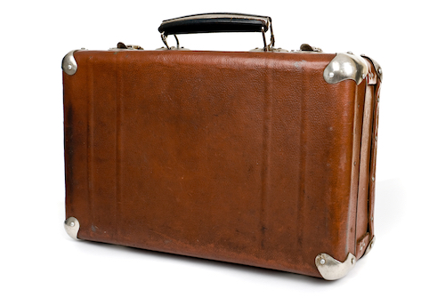
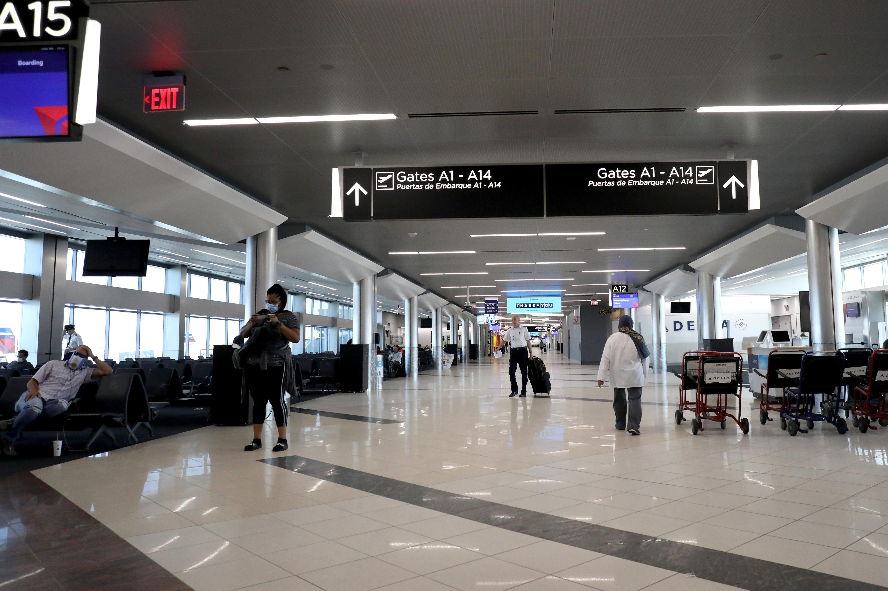
Fig 10. (Example 3) source and target image
On the last example, it also has a problem that the source image becomes transparent as in the previous example.
Fig 11. A suitcase in the airport (without mixed gradients / with mixed gradients)
Judging from this phenomenon, it seems to be important to pay attention when using the method with mixed gradients.